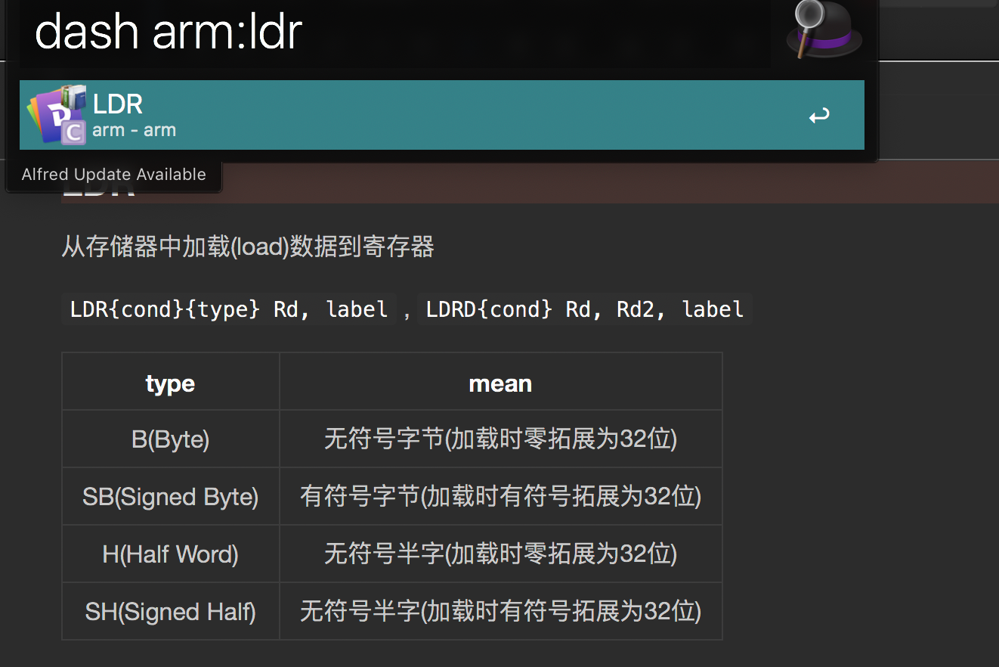

https://kapeli.com/dash_guide Documentation sets, or docsets, consist of collections of HTML files. Dash uses these docsets to store the docs you need. This section describes the various features Dash has to help you acquire and manange docsets. https://fileinfo.com/extension/docset What is a DOCSET file? Developer file created by Doxygen, a source code documentation system; contains an archive of documentation about a body of source code, which can encompass many different individual source code files and code constructs; used as the storage format for publishing documentation to developers that use the source code.
1.3. 哪里可以下载docset
dash.app 可以直接下 Docsets can be downloaded Dash’s Preferences > Downloads.
作为一名程序员，最离不开的就是文档了，大多数情况下我们都是通过文档了解一个陌生的领域。想象一下，打开了一堆文档，在文档中跳来跳去，多么的不优雅！所以Bogdan Popescu一怒之下开发了dash，解放了太多在文档中跳来跳去的码农。 自带大量常用文档(iOS/Mac/PHP/Python/Java等) 支持用户自定义文档(scrapy/requests/beautifulsoup等) 快速搜索文档及 API 管理和搜索代码片段 无缝插入众多第三方应用(Alfred/Xcode/Terminal等) 
1.5.2. 类似dash的工具
https://doc2dash.readthedocs.io/en/latest/installation.html#viewer To view the results, you will need a docset viewer, the most commonly known being Dash.app for macOS. Other alternatives have been developed in cooperation with Dash.app’s developer Kapeli: helm-dash for Emacs, velocity for Windows, and zeal for Linux, macOS, and Windows.
1.5.3. 官方工具支持自定义docset
1.5.3.1. doc2dash
Instructions on generating docsets can be found in the Docset Generation Guide. doc2dash is an MIT-licensed extensible Documentation Set generator intended to be used with the Dash.app API browser for macOS or one of its many free clones for all relevant platforms. If you’ve never heard of Dash.app and its likes, you’re missing out: together with doc2dash it’s all your API documentation at your fingertips – even when you’re offline! doc2dash’s documentation lives at Read the Docs, the code on GitHub. It’s tested on Python 2.7, 3.4+, and PyPy. Both Linux and macOS are tested although certain features are only available on macOS.
13.1. Create the Docset Folder# The docset folder structure can be created using this Terminal command:
mkdir -p <docset name>.docset/Contents/Resources/Documents/ You can also manually create the docset structure if you want, they're just folders.
13.2. Copy the HTML Documentation# Copy the HTML documentation you already have to this folder:
<docset name>.docset/Contents/Resources/Documents/ 13.3. Create the Info.plist File# Download and edit this sample Info.plist and place it in the <docset name>.docset/Contents/ folder. Editing should be straightforward, just set the values to whatever name you want for your docset.
13.4. Create the SQLite Index# Create a SQLite database in the file <docset name>.docset/Contents/Resources/docSet.dsidx with the following query:
CREATE TABLE searchIndex(id INTEGER PRIMARY KEY, name TEXT, type TEXT, path TEXT); Recommended: you can easily prevent adding duplicate entries to the index by also using this query:
CREATE UNIQUE INDEX anchor ON searchIndex (name, type, path); 13.5. Populate the SQLite Index# You need to create a script (or application or whatever) that will go through your HTML documentation and add appropriate rows into the SQLite database. Rows can be added using this query:
INSERT OR IGNORE INTO searchIndex(name, type, path) VALUES ('name', 'type', 'path'); The values are:
name is the name of the entry. For example, if you are adding a class, it would be the name of the class. This is the column that Dash searches. type is the type of the entry. For example, if you are adding a class, it would be "Class". For a list of types that Dash recognises, see below. path is the relative path towards the documentation file you want Dash to display for this entry. It can contain an anchor (#). Alternatively, Dash also supports http:// URL entries.
You can find a few generation script examples here. [https://kapeli.com/docsets#scriptExamples](https://kapeli.com/docsets#scriptExamples)
from pathlib import Path from bs4 import BeautifulSoup
# CREATE TABLE searchIndex(id INTEGER PRIMARY KEY, name TEXT, type TEXT, path TEXT); # CREATE UNIQUE INDEX anchor ON searchIndex (name, type, path); # INSERT OR IGNORE INTO searchIndex(name, type, path) VALUES ('Exploit', 'Class', 'index.html'); respath="~_~arm~_~.docset/Contents/Resources" conn = sqlite3.connect('{}/docSet.dsidx'.format(respath)) conn.executescript(''' CREATE TABLE IF NOT EXISTS searchIndex(id INTEGER PRIMARY KEY, name TEXT, type TEXT, path TEXT); CREATE UNIQUE INDEX IF NOT EXISTS anchor ON searchIndex (name, type, path);''')
def insert(*args): conn.execute('''INSERT OR IGNORE INTO searchIndex(name, type, path) VALUES (?, ?, ?);''', args)
filename="{}/Documents/~_~arm~_~.html".format(respath) with open(filename) as fp: html = fp.read() print("filename={}".format(filename)) soup = BeautifulSoup(html)
for subtitle in soup.select("a"): if not subtitle: break if subtitle == "\n": continue if subtitle.text != "Rax2" and subtitle.text != "Rafind2" and subtitle.text != "Rarun2" \ and subtitle.text != "Rabin2" and subtitle.text != "Radiff2" and subtitle.text != "Rasm2"\ and subtitle.text != "Ragg2" and subtitle.text != "Rahash2": continue